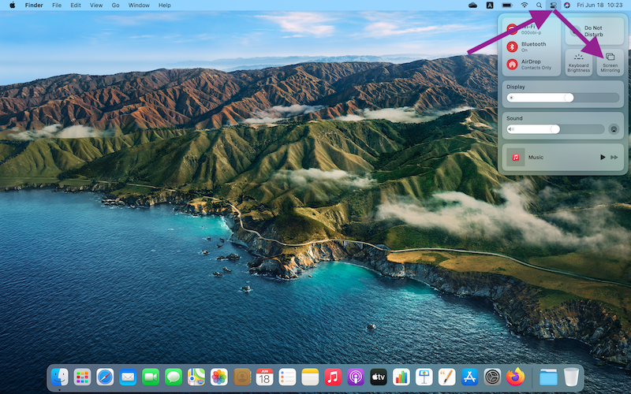

教卓左側のパネルの左上の主電源を押します
起動が終わりましたら、左下のプロジェクト電源ONを押します
それからApple (Mac iPhone iPad)の場合は上の映像選択のApple TVを選択します
Windowsの場合は隣のWifi Winを選択します
必ず自身の学籍番号と自分設定したMoodle等をログイン時のパスワードで学校のWifiに接続してから操作してください！
Appleの場合
Mac
右上をクリックし、表示したメニューの中のScreen Mirroring (システム言語によって異なる)をクリックします

使っている教室の番号をクリックします
iPhone iPadの場合
(システムバージョンによって異なる)メニューを開きます
Screen Mirroring (システム言語によって異なる)をクリックします
使っている教室の番号をクリックします
パスコードを入力画面が表示されます
同時に教室のスクリーンに表示されたコードを入力し、接続完了です
通常なら、このような画面が表示され、パソコンのデスクトップじゃなく、問題なく、接続成功です
Windowsの場合
このような画面が表示され、ご自身で試しながら、やってください！
注意！パソコンのPowerPointは絶対！全画面に表示しないようにしてくだい！教室のスクリーンが怪しくなります
PowerPoint右下のボタンをクリックします
発表者モードに入りました
Zoomで画面共有して、完了です！
教室での効果
Zoom視聴者から見た画面

視聴者は全画面しか見えず、発表効果を保ちながら、自分の参照内容にも見えます！完成！Ha! Ha! Ha!
教室のスクリーンはパスコードの工程が終わったら、映像音声OFFのボタンを押しても構いません
使用を終わりましたら、パネル右下のシステム終了を押し、OKを押し、最後左上の主電源押して、終了です
もちろん、省エネルギーは大切でございますから、退室時エアコンとライトを消すのを忘れないようにしましょう。換気はつけったままで大丈夫です